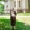

Специалист в областта на флебология: Разширените вени при хората са опасни заболявания на всяка възраст. Днес обаче те се възстановяват просто у дома.
Според статистиката разширените вени и нарушеният кръвен поток се диагностицират при 72% от жените над 40 години (при 37% при жените над 25 години). Най-опасното при това заболяване е, че с времето няма да се подобри - разширяването на подкожните вени само ще се увеличава, което означава, че подуването на крайниците, болката и рискът от съдова тромбоза само ще се влошават. Също така и при мъже има такъв проблем с разширени вени.
Въпреки това, с използването на съвременни препрарати можем лесно да се възстановим. За съвременните методи на терапия на разширени вени при мъжете и жените разказва известният експерт по флебология, завеждащ отделението по ангиология и флебология, член на Европейското дружество на флеболозите, член на управителния съвет на Асоциацията на флеболозите, професор, ръководител на Медицинския център по съвременна флебология - Димитър Павлов.
- Д-р Павлов, доколко опасни са разширените вени за нежната половина на човечеството?
Интересно е, че мнозина дори не приемат това за истинско заболяване. И подценяват последиците. Много хора се надяват, че с течение на времето ще изчезне само. Но то никога не изчезва. Разширените вени могат да съсипят не само живота на човека - заради тях и постоянните отоци и болки хората развиват комплекси. Между другото съвсем не без основание - при хората, страдащи от разширени вени на долните крайници, винаги се наблюдава хиперпигментация на кожата, тя придобива синкав оттенък, а в по-напреднали случаи се появяват повърхностни язви. Хората наоколо, разбира се, забелязват това, и така впоследствие се стига до комплекси. Хората с разширени вени трябва да сменят гардероба си, за да прикриват този проблем - да носят широки обувки, дълги панталони и тъмни чорапогащници.
Но все пак основната опасност от това заболяване е, че заради него се появява тромбофлефит. Тромбофлебитът (възпаление на вътрешните стени на вените) води до образуването на кръвни съсиреци, които могат да блокират лумена на вените, образувайки флеботромбоза, а също така, откъсвайки се от съдовата стена, през системата на долната куха вена да навлезе в белите дробове. В този случай може да възникне тромбоемболия на белодробната артерия, което е сериозно усложнение, а понякога и фатално.
Ако не се възстановяват разширените вени, се стига до динамична венозна хипертония - при ходене налягането във венозната система спира да намалява до стойности, които са нужни, за да се осигури нормална перфузия на кръвта през тъканите. Настъпва хронична венозна недостатъчност. Отначало се появява оток, след което заедно с течността в подкожната тъкан проникват и кръвни клетки (еритроцити, левкоцити). Наблюдава се липодерматосклероза и хиперпигментация. Със задълбочаване на нарушенията на микроциркулацията и застоя на кръвта, кожните клетки умират и възниква повърхностна или трофична язва, а това вече значи инвалидизация.
Всъщност хората, които се възстановяват сами в борбата с разширените вени (или изобщо не правят нищо), живеят с бомба със закъснител. И честно казано не разбирам защо го правят. Сега има доста ефективни начини на възстановяване на разширени вени. След 2-3 седмици ще можете да забравите за този проблем завинаги.
- Имате предвид хирургични методи?
- Разбира се, че не. Нещо повече - бих искал да разубедя хората - да не прибягват до операции. Включително с помощта на лазер. Въпреки високата скорост на извършваните манипулации (с което привличат пациентите частните клиники и непочтените специалисти гладни за пари), тези операции имат отрицателни негативни последици върху здравето на жената, тъй като те могат да предизвикат отделяне на кръвен съсирек. Но основният недостатък на хирургичната интервенция е, че тя по същество е просто козметично отстраняване на проблема - последствията от заболяването, а не неговата причина.
Тъй като причината остава, проблемът ще се появи отново в бъдеще. И то много бързо - до 1-2 години.
Ако искате да се отървете от разширените вени веднъж и завинаги, тогава трябва да премахнете причината. Отключващият механизъм за развитието на разширените вени се счита за нарушение на нормалното функциониране на венозните клапи с възникване на обратен кръвоток (рефлукс).
Оперативно венозните съдове се почистват по същество или част от вената се отстранява изобщо, но с такава манипулация нормалното функциониране на клапаните не се възстановява. Това води до повторна поява на проблема. Затова в нашата клиника спряхме да препоръчваме хирургичните методи срещу разширените вени.
- А какви методи препоръчвате сега?
- Например, много добро средссто, което може да премахне дори в напреднали случаи е , разработен през 2018 г. от Здравния институт към Академията. Тъй като този препарат е наш, а самият институт не се занимава с търговска дейност, струва стотинки в сравнение с онези в аптеките, и наистина помага!
- Можете ли да посочите конкретни примери за възстановяване на разширени вени с този препарат?
Разбира се. Мога да разкажа стотици случаи, но по-добре да се съсредоточа върху онези, които най-добре демонстрират предимствата от възстанояването с този препарат:
Вените се възстановиха изцяло. Периодът на възстановяване беше 5 седмици.
Мъчителната болка, която придружава пациента в продължение на 2 години, беше напълно изчезнала. Вените са възстановени.
Периодът на употреба на е 3 месеца. Вените са напълно възстановени.
Снимките ясно показват, че не само облекчава симптомите, но и отключва регенерацията на разширените вени. В резултат на това вените са напълно възстановени.
Според резултатите от клинични проучвания, както и практиката на употреба, именно се счита за най-важно в борбата с разширените вени. И най-хубавото е, че възстановяването може да се прави у дома. В крайна сметка много хора не искат да ходят при специалисти. И това лесно може да бъде разбрано, особено в светлината на последните събития. ви помага да се отървете от разширени вени без чужда помощ.
- под каква форма е?
Това е гел, който спира развитието на разширените вени и възстановява вените благодарение на специалната си формула. е уникална патентована разработка на нашите учени. Такива препарати не съществуват никъде по света.
Освен това продуктът не е поредната химия, а напълно натурален продукт изцяло билков с лечебни свойства, който изключва алергична реакция и други проблеми, възникващи по време на възстановяването, които също натоварват организма, принуждавайки го да обработва много различни химични съединения.
- Щом не се продава в аптеките, откъде може да се намери?
Всичко е много просто, можете да вземете , като се свържете с Института от официалния уебсайт или като попълните формуляра по-долу. Препаратът периодично участва в различни промоции, когато става истински достъпен.
Например, сега участва в специална програма "България без разширени вени" и в рамките на програмата може да се купи за . Сигурно ще се изненадате, но цената му наистина - ! А сега сравнете тази цена с цените на препаратите от аптеките.
помага дори при най-напредналите случаи на разширени вени, поради което се препоръчва дори за хора с тежка форма на заболяване. Може да се използва и за профилактика.
Бих искал да споделя резултатите от клинични проучвания в края на прилагането на . Те приятно изненадаха мнозина специалисти. За тези пациенти, с напреднала форма на разширени вени, това ще бъде истинско спасение.
1. Ефективността на гела е изчислена по стандартния метод (броят на възстановените към общия брой пациенти в група от 570 души, подложени на терапия) е:
- облекчаване на болката - 99%.
- намаляване на отока на краката - 98%.
- намаляване на тежестта и дискомфорта в краката - 99%.
- липса на телеангиектазии - 98%.
- свиване на разширените вени - 93%.
- елиминиране на хиперпигментацията - 96%.
2. Не са установени нежелани странични ефекти, включително алергични реакции.
3. е признат за водещо с в борбата с разширените вени.
Освен в страната препаратът е сертифициран в Европа от Берлинския университет по флебология и хематология. Клиничните изпитвания напълно потвърдиха данните на българските специалисти. Немците дори постигнаха по-висок процент на възстановяване. Европейските страни проявяват много голям интерес към продукта. Без изключение всички тестове показват, че препаратът е изключително ефективен.

- Мисля, че нашите читатели ще се поинтересуват как могат да купят на промоция?
Засега програмата работи само в някои части на страната. Производството не е достатъчно голямо, за да покрие нуждите на цялата страна. Когато количествата, приготвени за определен регион, приключат, той излиза от програмата и трябва да изчака реда си.
може да бъде закупен на цена от . Всичко, което трябва да се направи, за да получите продукта, е да оставите заявка на този сайт чрез формуляра за поръчка по-долу, като оставите своето име и телефонен номер, така че служителите на консултативния център да могат да се свържат с вас. Всеки град се включва автоматично. Следователно, ако видите, че можете да направите поръчка, значи има достатъчно бройки за тази част на страната. И аз лично гарантирам, че всички, които са напуснали заявка, определено ще получат своята поръчка.
- Може би искате да кажете нещо на нашите читатели, преди да завършим интервюто?
Единственото нещо, което искам да кажа - не бързайте да умирате, пазете здравето си. Може дори да не подозирате, че имате разширени вени. Започва напълно неусетно: първо се появяват тежест и умора в краката, появява се оток след натоварване, появява се мрежа от разширени и този списък може да бъде продължен. В резултат на това дори няма да забележите как ще се натрупат многобройни здравословни проблеми. Това без да говорим за внезапните смъртни случаи, които обикновено са свързани с развитието на тромбоза. Не чакайте да стане твърде късно! Започнете профилактика или възстановяване сега. От наша страна направихме абсолютно всичко, за да може всеки човек да го направи.
ПРОМОЦИЯ!
САМО
2
ДНИ
и
Поръчайте !
за
вместо
Марина
Вените ми бяха ужасни, преди да опитам този гел. Вече мислех за операция, но когато пробвах не можах да спра. След един месец употреба вените бяха напълно нови. Не бях на себе си от щастие! Изненадана съм, че сега има такова действие.
Светлана Езерска
С моите вени изглежда че всичко е нормално, но майка ми постоянно се измъчва и мисли да се оперира. Ще ѝ поръчам - надявам се да помогне, особено сега когато за можете да получите 1 упаковка.
Жана
Успях да взема гела за за опаковка точно както пише! Така че не се колебайте да участвате, програмата вече е активна в много градове. За първи път чух за преди три месеца и веднага го поръчах. Имах ужасни проблеми с разширените вени, а след това, след първите седем дни - първите резултати! Просто се радвам на живота !!!
Елена
Наскоро гледах предаване за разширените вени. Там те говореха за този препарат, гордееха се, че сме създали най-доброто средство в света срещу разширени вени.
Олга
Аз също го поръчах, излезе ми съобщение, че съм успяла. Обещаха да го доставят в рамките на 2 дни, така че ще почакам.
Ина Ванчева
След като започнах да се мажа, дори не очаквах такъв резултат. Първо неприятните усещания изчезнаха, а след това визуално всичко започна да изглежда по-добре. Сега - краката ми са напълно здрави! Освен това е и евтино !!).
Мария
Интервюто е много интересно, благодаря! Отваряте очите на хората!
Людмила
Това да не е някаква измама? Защо се продава в интернет?
Тома
И аз се включвам по препоръка. Започнах да имам проблеми с вените. Отидох при специалист по флеюбология, той ме погледна и каза, че е необходимо спешно предприемане на мерки. Предписа ми препарати за 650 лева, които дори не помогнаха. Колеги на работата ми препоръчаха . Купих курса за 250 . Така че съм спестила голяма сума. В рамките на два месеца ужасните вени станаха много по-малки и се възстанових напълно)!
Зоя Семкова
Людмила, чела ли си изобщо статията? Продават го по интернет, защото искат да помогнат! Каква измама може да има, ако с отстъпката цената е за брой? Поръчах, куриерът ми го донесе, проверих всичко, погледнах и чак тогава го платих. Поръчайте, не се страхувайте!
Наталия
Светлана, ще ви кажа от моя собствен опит - резултатът от курса е несравним! Използвах го сама и го поръчах за майка ми - и при двете вените се върнаха в нормалното си състояние. Лично ние сме много доволни. Поръчайте за майка си, не се колебайте!
Ана Котева
Разширените ми вени са в начален стадий, но на една приятелка видях какво може стане и как да завърши. Тя също ми препоръча , сега го потърсих в нета и попаднах на тази статия :))
Полина
Прочетох отзивите и разбрах, че трябва да го взема)
Вероника Илиева
Вярвате или не, аз имах същия проблем, краката ми бяха постоянно подути, появиха се звездички, бях се отчаяла и попаднах на това просто е чудесен продукт, препоръчвам на всички
Анастасия
Поръчах преди няколко дни, изобщо нищо сложно. Кремът-чудо пристигна по куриер ден по-късно. Взех го и започнах да мажа. По-късно ще напиша за резултатите. Благодаря!
 Лили
Ако не бяхте вие, нямаше да разбера за този продукт. И вероятно щях да си умра след година две. Трябваше да видите какви вени имах преди да използвам гела.
Любомира
Резултатът просто надмина очакванията ми. Целият курс ми отне 1,5 месеца, сега всичко е страхотно! Краката ми отново изглеждат като преди.
Краси
Буквално днес поръчах гела по специалната програма.
Наистина получаваш една опаковка за с доставката цената излезе на . Побързайте!
Обадиха се много бързо и поръчката беше потвърдена. Вече не е нужно да се срамувам от краката си.
Светлана
Вече 2 седмици използвам . Усещам лекота в краката, а преди това едвам се клатех. Краката ме боляха постоянно и се подуваха. И гледката не беше много добра заради тия разширени вени. Продуктът е отличен!
Краси
Прочетох статията и веднага реших да поръчам да се възстановя. А какво ли не бях опитала. А вените си оставаха същите като по-рано.
 Илона
Илона
Хора, кажете ми откъде го купихте? Това не се продава в аптеките, а се страхувам да поръчам от интернет. Страх ме е, че ще попадна на фалшификат, от който нищо няма да се получи.
Коментари